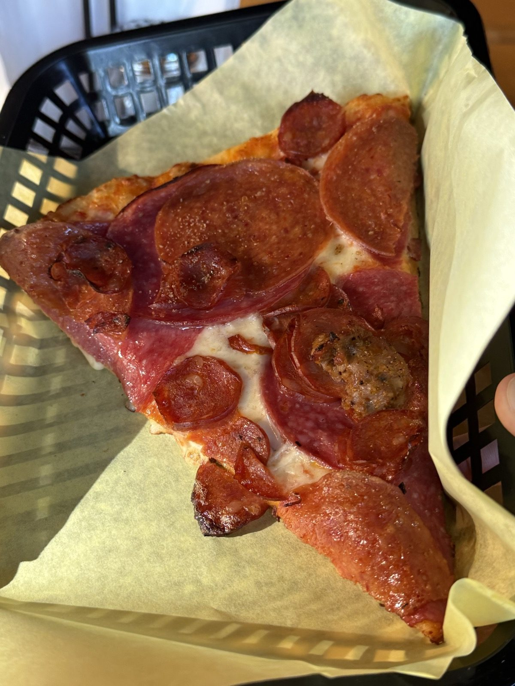
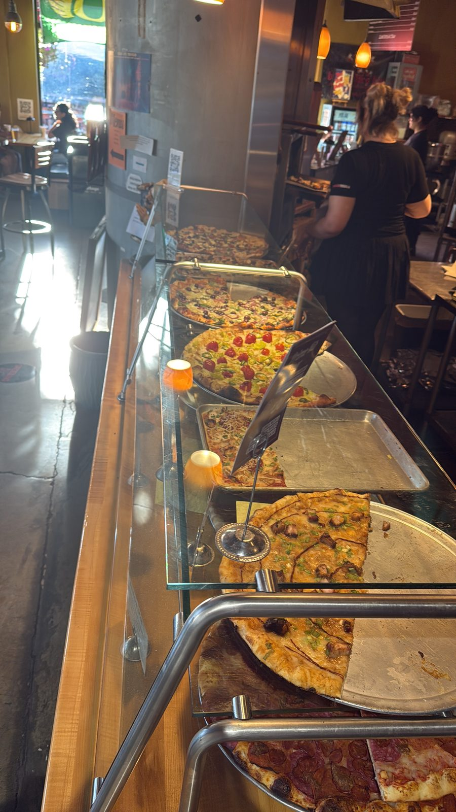
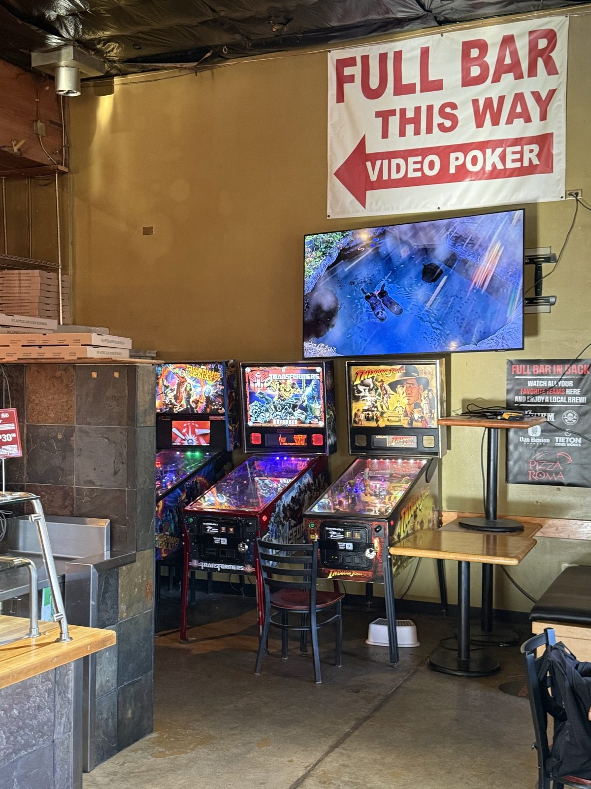
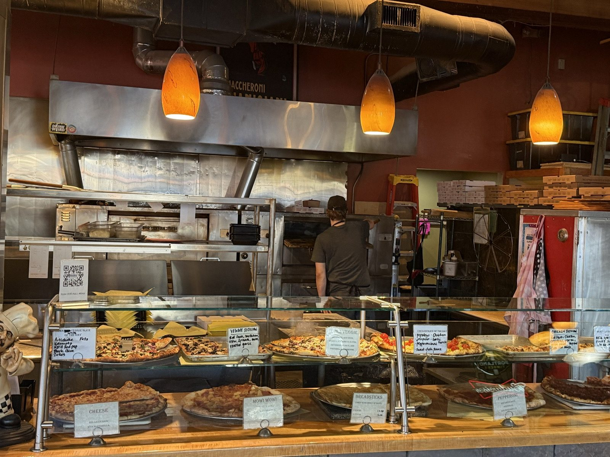
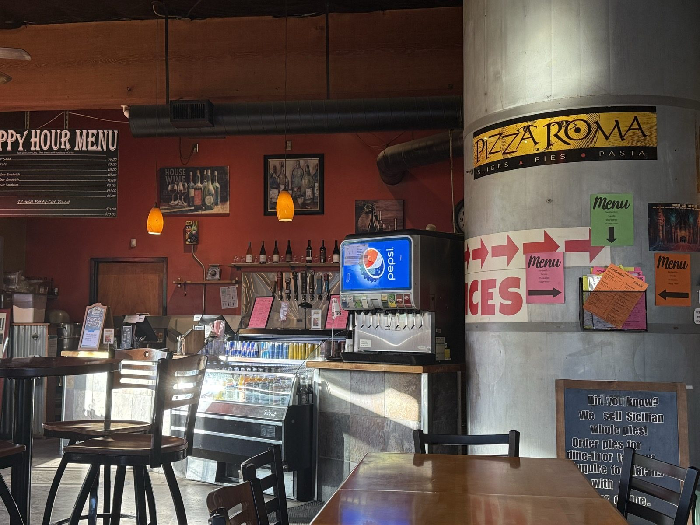

Three Stars and a Wall of Pinball, at Pizza Roma

Pizza Roma, on SE Woodstock Blvd in Portland, Oregon, is the kind of pizza-by-the-slice counter that's also, somehow, a full bar with video poker and a room of pinball machines in back. The slice case runs the length of the counter — cheese, pepperoni, a veggie pie, a meat-lovers loaded with pepperoni, salami and sausage — each one hand-labeled on a little chalkboard card, with a chef statuette standing guard over a "Today's Special" sign at one end.

Is Pizza Roma worth a trip to Woodstock?
Honestly — the pizza itself was just okay. Three out of five: a solid slice, nothing that's going to pull me back across town for the food alone. The meat-lovers slice pictured above had a fair amount of pepperoni, salami and sausage piled on, and it did the job. It just didn't do more than that.
The room is doing more work than the case
What actually stands out at Pizza Roma isn't on the menu board — it's the rest of the building. A hand-lettered "FULL BAR THIS WAY / VIDEO POKER" sign points past the pizza case toward a back room lined with pinball machines, a mounted TV, and a couple of high-top tables to sit and play at. A chalkboard by the ordering line advertises whole Sicilian pies for dine-in or takeout. It's less a pizza place with a bar attached and more a bar and arcade that happens to also sell pizza — and depending on what you're actually there for, that might be the better reason to go.


The counter itself is a whole scene on its own — a soda fountain, a cooler of bottled beer, a wall of taps, and a concrete column wrapped in the Pizza Roma logo where the slices and pies menu is taped up alongside the happy hour list.

Two doors down, in the same little food-cart pod on the same block, is Tacos Fita — where the rest of that night actually went right.
The practical bit
Pizza Roma — 4715 SE Woodstock Blvd, Portland, Oregon 97206. 📍 Get directions
Phone: (503) 774-5667.
Hours: generally 11am–10pm Sunday through Thursday, 11am–11pm Friday and Saturday.
Worth knowing: full bar and video poker in back, plus a room of pinball machines — if the pizza's just okay, the arcade is a decent reason to stay anyway.